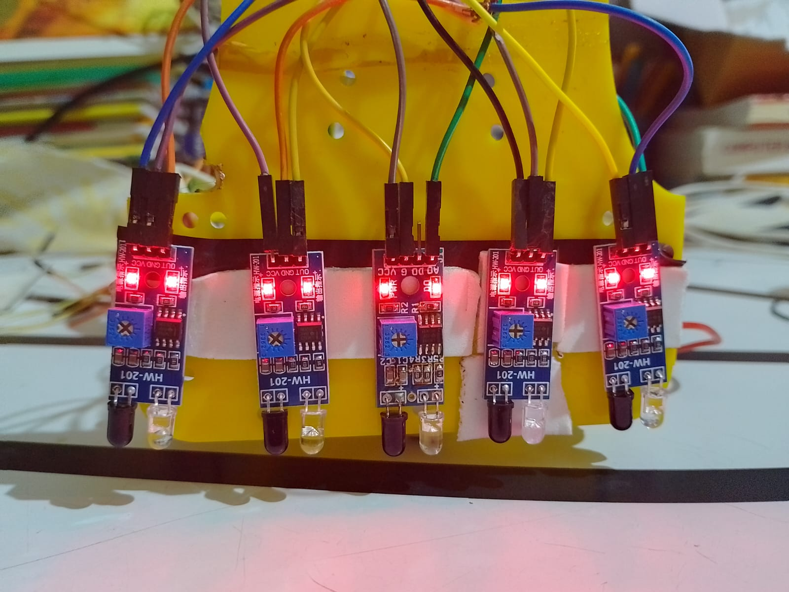

It started with
a robot on the floor.
I’m 20. I build robotics and learning systems, and I’m working on my second company in Physical AI.

I began coding around ten. Building robots gave the code consequences: a bad reading became a wrong turn; an unstable controller became something you could see.
That took me from school robotics and World Robot Olympiad to autonomous vehicles, reinforcement learning, and independent competition work. I kept moving between the mathematical part and the part that has to run.
With AviRob, the question expanded. Getting a robot to move is one layer. Understanding its state, coordinating it with other systems, reconstructing what happened and verifying the outcome adds several more.
My current work brings those layers together. I’m building a Physical AI company in stealth, working toward general industrial intelligence and autonomous factories.
A decade of
building through it.
The projects got larger. The habit stayed the same: understand the mechanism, build the system, inspect what it actually does.
Started writing code.
Curiosity turned into electronics, robot mechanisms, sensors and closed-loop control.
Built robots. Put them to the test.
WRO India: regional participation in 2018, regional Junior second place in 2019, and a RoboMission Senior Silver Badge at the 2022 National Championship.
Moved into autonomous vehicles.
Worked on RL and classical local planning for a physical golf cart, alongside visual driving, representation transfer and imitation-learning experiments in CARLA.
Built the ICRA racing controller independently.
Third in qualification in the ICRA RoboRacer Sim Racing League. An 81.32-second run, zero collisions and an 8.03-second best lap.
Founded AviRob. Went into industrial systems.
Built robot runtimes, machine-evidence compilation and geometric verification. Spoke at ROSCon India 2025 about the AMR/AGV log and safety-evidence problem.
Building a second company in stealth.
Working on Physical AI for industry, toward machines and factories that can adapt, coordinate, recover and verify their work.
From optimisation
to the physical loop.
The work spans the mathematical update, the runtime boundary and the evidence left by execution.
Learning & optimisation
Trust-region policy optimisation, Hessian–vector products, conjugate gradients, randomised critic ensembles, learned dynamics, model-based RL experiments, world-model research and visual representation transfer.
Motion & control
Model Predictive Contouring Control (MPCC), RL/classical local planning, actuator constraints, anti-windup, derivative filtering, gain scheduling and controller lifecycle.
Robotics & runtime
ROS 2, Nav2, AMCL, coordinate frames, multi-robot namespaces, LiDAR integration, command arbitration, stale-signal handling and deterministic recording.
Industrial & native systems
Machine evidence, temporal alignment, computational geometry, provenance, C++20 control cores, native Swift audio capture, local inference and session-control systems.
The early loops.
Original test footage from the years before autonomous racing and industrial systems.
WRO India 2019 · regional Junior second place

Hard problems.
Physical consequences.
I’m interested in learning systems, autonomous machines, and people who build deeply enough to connect the two.
kaustubhkr.work@gmail.com ↗